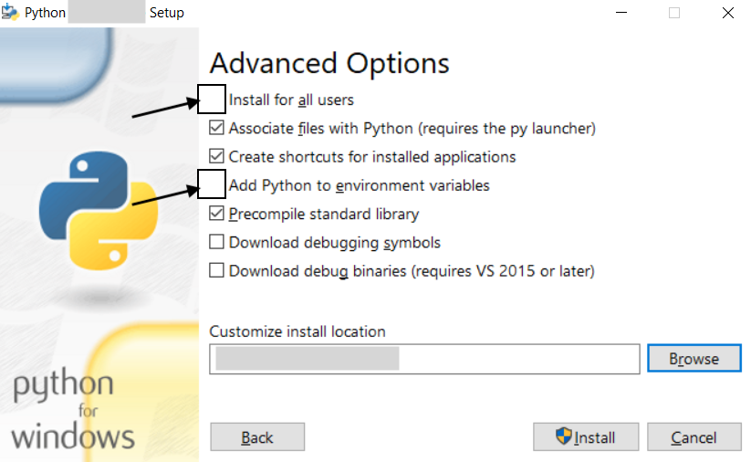

Getting started with Python
Check if Python is already installed
To check if you already have the last version of Python installed on your machine (Windows, Mac, or Linux), we are going to use a command-line interpreter - shell. Operating systems have different command-line application/interface. Windows uses Command Prompt, Mac uses Terminal, and Linux uses an application called "Console" or "Terminal" (respectively for the KDE and GNOME environments).
Note: In computing, a shell is a user interface for accessing services of an operating system. It can be a command-line interface (CLI) or a graphical user interface (GUI). It enables a user to perform several operations, such as file management, installations, run processes, monitor and configure OS. We'll use it to install packages and as an interpreter for python.
Open the Command Line Interface (CLI)
Windows
- Open the Windows menu
- Type "command" in the search bar
- Select Command Prompt from the search results
macOS
- Open the Spotlight search box in the upper right-hand corner
- Type "terminal" in the search bar
- Click on Terminal or just hit return if it's the first result
Note: alternatively, go to the directory Applications/Utility and open Terminal application.
Linux
- Open the Dash by clicking the icon of your Linux operating system appearing in the upper-left menu
- Type "terminal" or "console" in the search bar
- Select the Terminal/Console application from the results that appear
Check the Python version
Type python --version (also python -V on Windows) in the command line, then press return on your keyboard to see whether you have a default version of Python already installed. If you don't have python installed, you should get an error message. macOS usually comes with Python 2.7 already installed, hence the shell will show the current installed version. For instance:
python --version
Python 2.7.3
Try to type python3 --version (also python3 -V on Windows) in the command line, then press return to check whether you have Python 3 installed, and eventually the last version.
Download and install Python
Windows
- Go to the Python download page
- Click on the download button to get the latest version of Python
- Double-click on the Python installer just downloaded
- A dialog box like the one below should appear

- Click on Customize installation
- On the following page you should keep all the checkboxes selected, and move to the next page
- Now you should be in the Advanced Options page. Here you need to keep checked the default options with the addition of these two check-boxes (if not already checked): Install for all users, and Add python to environment varaibles. Make sure the Customize install location has been also updated

- Click on the Install button, and wait until the end of the installation
- Finally, go to the command line and try to type
python --version(alsopython3 -V) and press return to check whether you correctly installed Python.
macOS
- Go to the Python download page
- Click on the download button to get the latest version of Python
- Double-click on the downloaded .pkg file to start the installation
- Follow the step-by-step guidelines
- Finally, go to the command line and try to type
python --version(alsopython3 --versionin case you have also Python 2) and press return to check whether you correctly installed Python
Linux
- Open the Command Line Interface (Terminal or Console)
- Type
sudo apt-get update - Type
sudo apt-get install python3.10 python3-pip - Finally, go to the command line and try to type
python --version(alsopython3 --versionin case you have also Python 2) and press return to check whether you correctly installed Python.
Note: in case you find troubles in the process, check the following instructions according to your specific Linux distribution
Play with Python in the shell
Windows, Mac, and Linux users can use the shell as a Python interpreter.
The interpreter is the program you’ll need to run Python code and scripts. Technically, the interpreter is a layer of software that works between your program and your computer hardware to get your code running.
- Type
python(orpython3) in the shell. You'll see in the first line which version of python is installed. If it still shows youpython 2.X, typeexit()and press enter on your keyboard to exit from python. Try to typepython3to access the latest version of python installed on your computer. - In the second line you will see
>>>. This means you accessed python in interactive mode and you can now type your commands to be executed by the shell. - Try to type
print("Hello world")and press enter.
>>> print("Hello world")
Hello World
- Type
exit()and press enter to exit from the python interactive mode.
Install Python libraries
A text file containing Python code that is intended to be directly executed by the user is called script. A file that contains Python code that is designed to be imported and used from another Python file, is called module/library.
Some libraries/modules (e.g. csv and collections) are built-ins, meaning you do not need to install them, while others, developed by the larger community, must be downloaded and installed.
We can install python libraries using the pip command in the shell. pip is a package management system used to install and manage software packages written in Python. You will use it whenever you want to install a Python library. In case you also have Python 2 installed on your machine, pip is renamed in pip3.
Type pip --version in the shell to see which version is actually installed on your machine.
Note (for Windows): If not installed, follow the instructions here to find where and which version is installed.
Install modules with pip3
We will see how to install networkx and anytree.
- NetworkX: a Python package for the creation, manipulation, and study of the structure, dynamics, and functions of complex networks. To install
networkxtypepip3 install networkxin the shell. - AnyTree: Simple, lightweight and extensible Tree data structure. To install
anytreetypepip3 install anytreein the shell.
Note: you can also type pip3 install -U <module_name> the -U option will upgrade all packages to the newest available version.
Whenever you want to install a library, look for the documentation page and the official name of the package to be used in the shell. Here is the list of libraries/packages you'll need to install for the hands-on classes.
Install Visual Studio Code
Windows
- Download the Visual Studio Code installer for Windows.
- Run the downloaded installer (VSCodeUserSetup-{version}.exe). This will only take a minute
- By default, VS Code is installed under C:\users{username}\AppData\Local\Programs\Microsoft VS Code
Note: .NET Framework 4.5.2 or higher is required for VS Code. If you are using Windows 7, make sure you have at least .NET Framework 4.5.2 installed. You can check your version of .NET Framework using this command, reg query "HKEY_LOCAL_MACHINE\SOFTWARE\Microsoft\NET Framework Setup\NDP\v4\full" /v version from a command prompt.
Note: you can find more details at https://code.visualstudio.com/docs/setup/windows
macOS
- Download Visual Studio Code for macOS.
- Open the browser's download list and locate the downloaded archive.
- Extract the contents of the downloaded archive. (usually with a double-click)
- Drag Visual Studio Code.app to the Applications folder, making it available in the macOS Launchpad.
Note: you can find more details at https://code.visualstudio.com/docs/setup/mac
Linux
For Debian/Ubuntu based distributions, download and install the .deb package (64-bit), either through the graphical software center if it's available, or through the command line with: sudo apt install ./<file>.deb
Note: you can find more details and guidelines for other linux distributions at https://code.visualstudio.com/docs/setup/linux
Create and run a Python script in Visual Studio Code
Install Python extension for Visual Studio Code
- Open Visual Studio Code
- Install the Python extension for VS Code from the Visual Studio Marketplace. The Python extension is named Python and it's published by Microsoft. To open the extensions marketplace click on this icon:


Note: you can find more details at https://code.visualstudio.com/docs/python/python-tutorial
Create and run the first Python script
- Select File -> New File
-
You need to select the type of the file (i.e. the programming language) and save it. Click on select a language, search for "python" and select it.

-
Now we can write our first script. Write the following code:
print("Hello World !!")
- Run the script by clicking on the menu arrow near the run button and selecting Run Python File in Terminal

Note: by default Visual Studio Code should detect the Python interpreter automatically